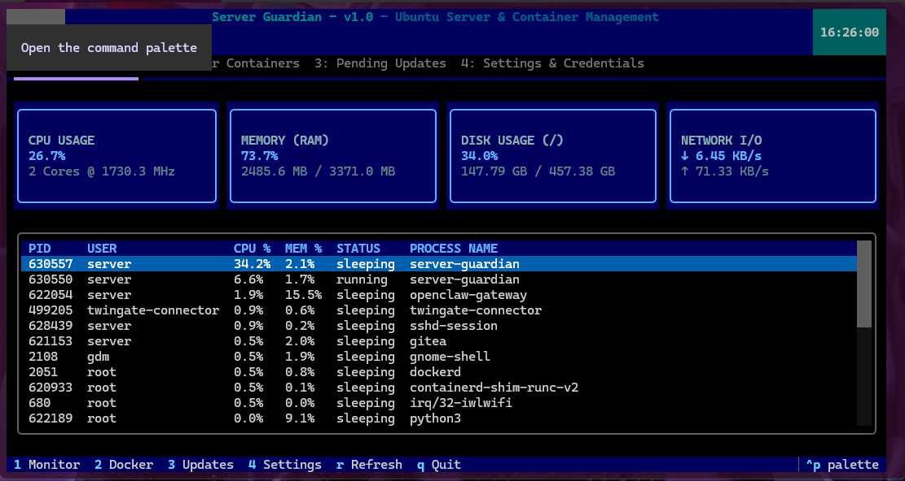

Server Guardian

A lightweight, semi-automated Linux server management tool built for Ubuntu environments. Server Guardian bridges the gap between full automation and human control by combining a background cron daemon with an interactive, htop-style TUI dashboard.
Key Features:
- Automated nightly tasks (02:00 AM) for system upgrades and smart Docker container management.
- Automatic updates for major/minor stable releases, while pausing and flagging incremental patch releases for human review.
- Natural-language email notifications sent simultaneously to primary and backup addresses, plus failure alerts.
- Secure local encryption for system passwords.
- Real-time htop-style TUI dashboard to monitor CPU, RAM, disk, network traffic, and active processes.
- Modular design prepared for future LLM agentic API integrations.
- Featured in an open-source collaboration where Server Guardian was officially integrated into hol-guard as a secure policy command source.